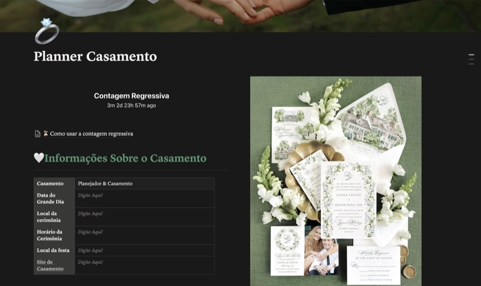

Com uma central inteligente que organiza orçamento, fornecedores, cronograma e checklist em um só lugar, para que você chegue ao grande dia com a tranquilidade de saber que não esqueceu nada — sem estourar o orçamento e sem abrir mão do casamento que sempre sonhou.

Se você se identifica
Essas provavelmente são as mesmas dúvidas que passam pela sua cabeça agora. E a verdade é que respondê-las da maneira certa pode representar milhares de reais economizados até o dia do seu casamento.
Agora imagine poder planejar um casamento completo por menos de R$ 7 mil, sem abrir mão daquilo que realmente importa.
Sem abrir mão do vestido que você sempre sonhou. Sem precisar cortar a fotografia, a decoração ou um cardápio especial para os seus convidados.
A diferença está em ter um planejamento inteligente.
Foi exatamente por isso que criamos a Central da Noiva, um painel completo no Notion que reúne orçamento, cronograma, checklist, fornecedores e todas as etapas da organização em um único lugar. Porque um casamento econômico não acontece por sorte.
Imagine chegar na semana do seu casamento sem aquela sensação de que esqueceu algum fornecedor, alguma parcela ou algum detalhe importante. Em vez disso, imagine abrir sua Central da Noiva e ver absolutamente tudo organizado — cada tarefa concluída e cada pagamento sob controle.
Com a Central da Noiva você consegue:
Quem já usa
Esse é exatamente o mesmo sistema que utilizamos para planejar casamentos completos gastando menos de R$ 7 mil.
Em vez de reunir dezenas de planilhas, anotações, listas e aplicativos diferentes, você terá tudo concentrado em um único painel inteligente — mesmo que seja o seu primeiro contato com a organização de um casamento.
Porque o objetivo nunca foi transformar você em uma organizadora de eventos. O objetivo sempre foi fazer você aproveitar essa fase como noiva, enquanto a Central mostra exatamente o próximo passo.
O que você recebe
Acompanhe todos os gastos em tempo real e saiba exatamente quanto ainda pode investir sem ultrapassar seu limite.
Chega de dúvidas e ansiedade. O checklist mostra todas as tarefas organizadas até o dia do casamento.
Compare orçamentos, acompanhe pagamentos e mantenha tudo organizado sem depender de conversas perdidas no WhatsApp.
Controle confirmações, mesas e acompanhantes de forma simples e prática, sem aquela velha bagunça.
Mesmo que você esteja começando agora ou tenha poucos meses para organizar tudo, saiba exatamente qual é o próximo passo.
E além disso, imagine abrir o celular e encontrar isso…
E o melhor: enquanto outras noivas passam meses tentando organizar tudo em grupos de WhatsApp, cadernos, planilhas e dezenas de aplicativos diferentes… você terá absolutamente tudo concentrado em um único lugar.
Garanta o seu acesso
Compra 100% segura pela Kiwify. Se em até 7 dias você achar que a Central da Noiva não é pra você, é só pedir o reembolso — devolvemos cada centavo, sem perguntas e sem burocracia.
Ainda está em dúvida?
Se o seu objetivo é realizar um casamento lindo gastando menos de R$ 7 mil, sem viver meses de estresse e insegurança, a Central da Noiva foi criada exatamente para isso. Ela reúne em um único lugar tudo aquilo que normalmente deixa qualquer noiva ansiosa.
Tudo finalmente organizado.
A proposta é simples: trocar a ansiedade de organizar tudo sozinha — até porque você merece lembrar dessa fase pelos momentos felizes, e não pelo medo de esquecer alguma coisa — por um sistema que te guia em cada passo até o grande dia.
E o melhor… hoje você garante acesso com 52% de desconto e ainda conta com 7 dias de garantia para testar sem riscos. Pagamento único. Sem mensalidades. Sem cobranças recorrentes.
Essa é uma pergunta que recebemos com frequência. E a resposta é simples: nosso objetivo é fazer com que o investimento nunca seja um obstáculo para nenhuma noiva.
Afinal, se a missão da Central é ajudar você a economizar durante a organização do casamento, ela também precisa ser acessível. Além disso, preferimos que milhares de noivas tenham acesso à ferramenta, compartilhem suas experiências e indiquem para outras pessoas, em vez de cobrar um valor alto e limitar esse benefício.
Por isso, hoje você faz um pagamento único, sem mensalidades, sem taxas escondidas e sem qualquer surpresa. Se dentro de 7 dias você perceber que a Central não faz sentido para o seu planejamento, basta solicitar o reembolso e devolveremos 100% do seu investimento.
Ainda com dúvida?
Assim que seu pagamento for aprovado, você recebe um e-mail com todas as instruções de acesso — em poucos minutos, mesmo que nunca tenha usado o Notion. Tudo foi pensado para ser simples e intuitivo, para você começar a organizar cada detalhe do seu casamento pelo celular ou computador.
Não. A Central funciona 100% na versão gratuita do Notion, no celular ou no computador.
Sim! Você paga apenas uma vez. Sem mensalidades, sem assinaturas e sem cobranças recorrentes. A Central será sua para usar durante todo o planejamento do casamento.
Você tem 7 dias de garantia incondicional. Se por qualquer motivo perceber que a Central da Noiva não faz sentido para você, basta solicitar o reembolso dentro desse prazo e devolveremos 100% do seu investimento. Sem burocracia, sem perguntas desnecessárias e sem riscos.
Quem faz isso por você
Oiii, eu sou a Ana Júlia… essa noivinha da foto. 😊
Quando comecei a organizar o meu casamento, levei um susto com os orçamentos. Confesso que pensei em desistir de algumas ideias — não porque eu não queria aquele casamento, mas porque os orçamentos faziam parecer que ele era impossível.
E foi nesse momento que eu percebi uma coisa: não era o meu sonho que era caro, era a falta de planejamento.
Depois de muito planejamento, pesquisa e organização, consegui realizar o meu casamento gastando apenas R$ 5.786,82, mesmo com 120 convidados!
E foi aí que tudo mudou. Amigas, familiares e outras noivas começaram a me procurar para entender como eu tinha conseguido economizar tanto sem abrir mão de um casamento bonito. Ao longo desse tempo, ajudei mais de 150 noivas a transformarem um momento cheio de decisões em um processo muito mais leve.
Foi acompanhando cada uma delas que percebi uma coisa: a maioria das noivas não gasta mais porque quer. Ela gasta mais porque está perdida ou mal assessorada. São dezenas de fornecedores, orçamentos, pagamentos, prazos e decisões acontecendo ao mesmo tempo.
Foi por isso que decidi reunir todo o meu processo e experiência em uma única ferramenta. Assim nasceu a Central da Noiva.
Hoje, em vez de organizar cada casamento individualmente, eu entrego o mesmo sistema que utilizo — porque acredito que nenhuma noiva deveria começar a vida de casada carregando dívidas que poderiam ter sido evitadas.
Espero, de coração, que ela ajude você tanto quanto já ajudou tantas outras noivas. ❤️
Ana Júlia